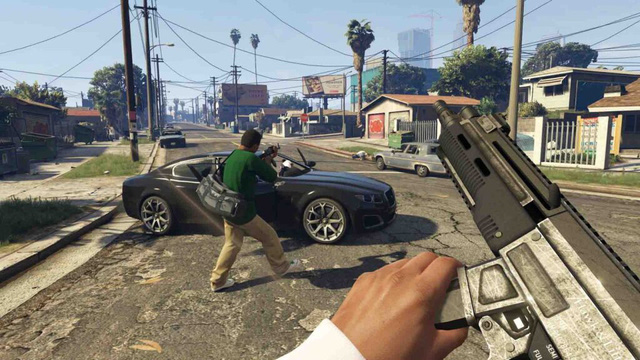
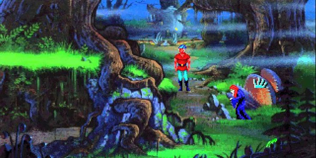
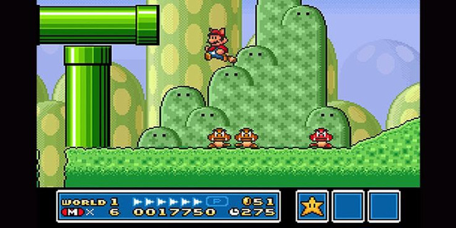
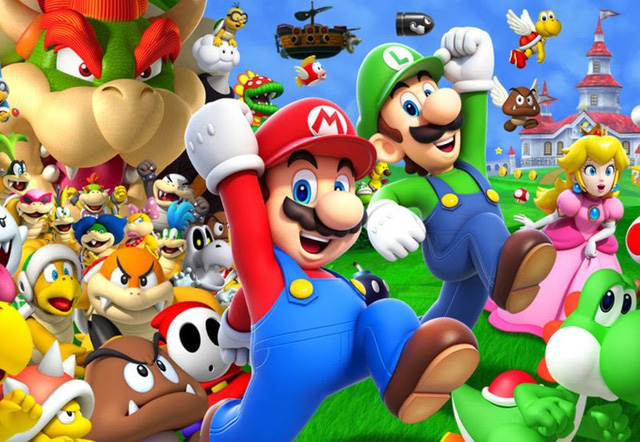

Grand theft auto
Grand Theft Auto khởi đầu là một tựa game thuộc thể loại top-down arcade, nhưng nhanh chóng được chuyển thành thể loại hành động, phiêu lưu góc nhìn thứ ba. Và đương nhiên, dòng game này đã trở thành một cú "hit" ngay lập tức nhờ lối chơi cùng sự độc đáo đến từ nhân vật và nền văn hóa mà nó đại diện.  Grand Theft Auto đã trở thành một trong những dòng game kinh điển nhượng quyền thương mại sinh lời nhất mọi thời đại. Bạn có thể nhận ra một cách rõ ràng hoặc hơi "có mùi" của lối chơi Grand Theft Auto trong đa số các tựa game thế giới mở hiện nay như Just Cause, Assassin's Creed và Watch Dog... King's Quest  Không như trên các hệ máy console vào đầu những năm 80 của thế kỷ trước, game trên PC là một lĩnh vực rất mới mẻ. Trong bối cảnh đó, các nhà làm game đã cho ra đời rất nhiều ý tưởng, tác phẩm... giúp định hình thế giới game mà chúng ta được thấy ngày nay. Và tựa game King’s Quest của Sierra On-Line là một trong những tượng đài như vậy.Tựa game phiêu lưu này có cả một thế giới 3D để game thủ khám phá với môi trường và các item đều được vẽ tay, có thể tương tác. Mặc dù nếu so với những tựa game hiện đại thì King’s Quest cứ như công nghệ thời đồ đá vậy. Tuy nhiên nếu không có nó thì chúng ta sẽ không bao giờ được biết đến những Skyrim, Baldur’s Gate hay The Witcher của hiện tại.
Từ khởi đầu khiêm tốn của mình, King’s Quest đã chỉ ra cho các nhà phát triển thấy được họ thực sự có thể làm được những gì, vượt qua cả giới hạn của phần cứng để làm được những điều vĩ đại. Mario Bros  Tựa game Mario Bros của nhà làm game huyền thoại Shigeru Miyamoto đã thành công rực rỡ khi nó được ra mắt hồi năm 1983. Tựa game gốc có lối chơi rất đơn giản, khác xa với những tựa game Mario hiện nay. Năm 1985, tựa game Super Mario Bros lên máy NES và trở thành tựa game nổi tiếng nhất lịch sử.  Từ đó, dòng game Mario và những tựa game của nó vẫn không ngừng tiến bộ và thành công trên mọi hệ máy console Nintendo, đỉnh cao là đợt phát hành Super Mario Odyssey và Super Mario Maker 2 cho Nintendo Switch. Trong tương lai chắc chắn dòng game này sẽ còn làm được nhiều hơn thế nữa.